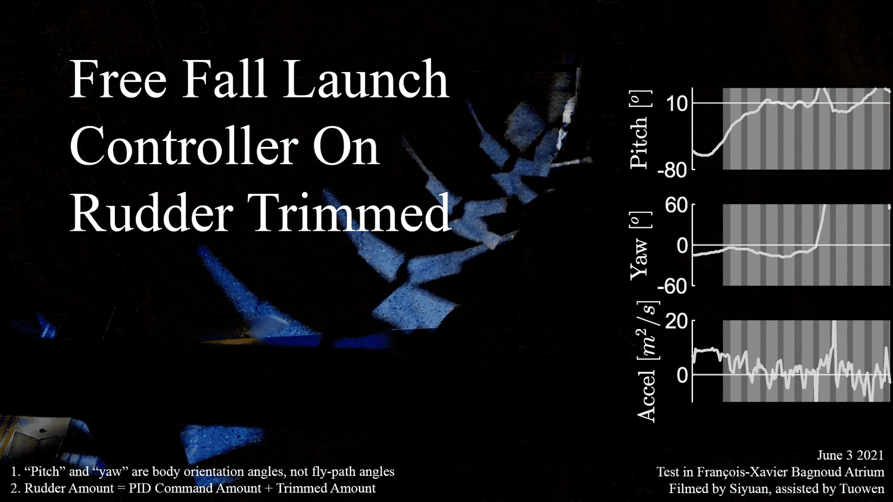
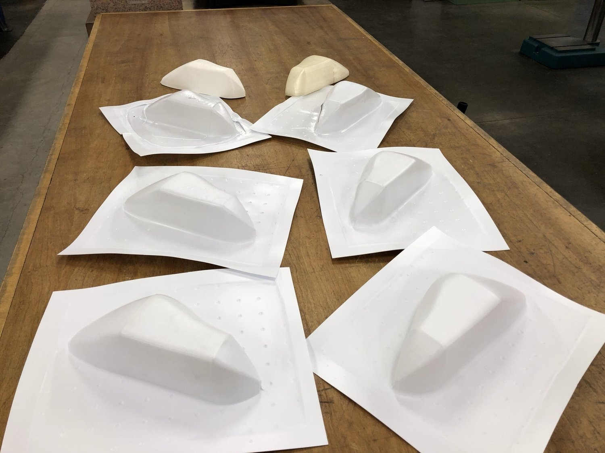
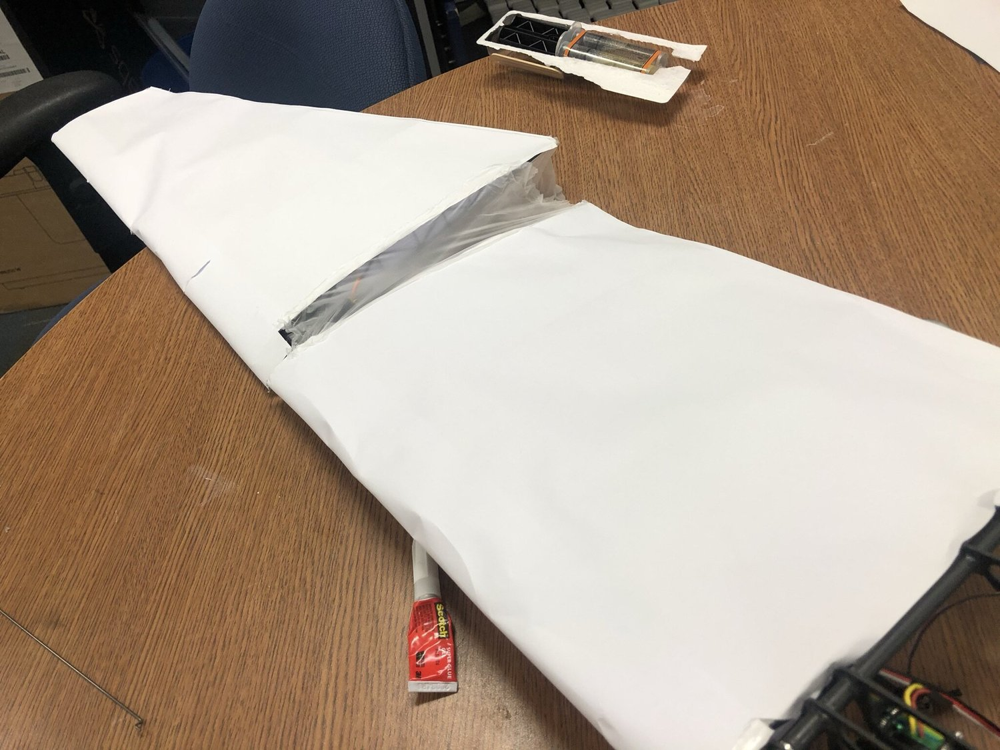
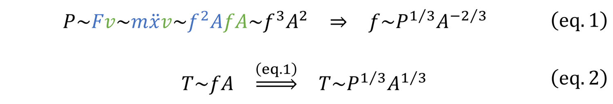
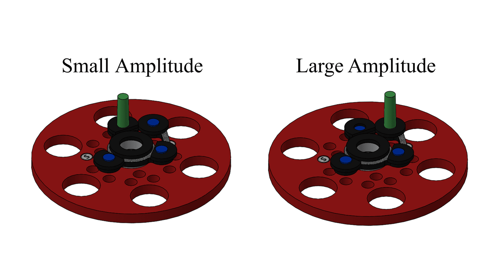

Final Tests

Figure 1. The best flight in May covered a range of half of the atrium length. Flapping 3.5Hz. 0.25 play-back-speed.
In May, the ornithopter wasn’t able to reach the end of Robotics Atrium (Figure 1). To help it reach the end zone, I further reduced drag and increased thrust (Figure 2, 3).

Figure 2.
Cover fuselage with vaccum-formed streamlined skin

Figure 3.
Cover gaps between upper arm and lower arm with elastic membrane. Uncovered gaps would generate unwanted vortex and screw up the propulsive flow structure.
The active-pitch controller also increased its refreshing rate from 10Hz to 50Hz, so as to actively pitch lower arms in more precise timing. On June 12, the ornithopter managed to reach the end zone (Figure 4).
Figure 4. Touch down at Robotics Atrium end zone. Flapping 3.5Hz. 0.50 play-back speed (different from Figure 1).
To avoid losing altitude, the ornithopter needed further increasing its thrust.

I could not increase motor power P. Thus, increasing flapping amplitude A will reduce flapping frequency f (eq. 1). Fortunately, early literature reviews suggested that, within my ornithopter’s performance region, thrust T is proportional to the product of f and A. As a result, even if motor power P is kept unchanged, increasing flapping amplitude A should increase thrust T (eq. 2).

Figure 5. Increasing length of crank of the crank-rocker mechanism.
To increase the flapping amplitude A, I increased the length of the crank by moving the pivot further away from the axle (Figure 5). After that, a final test was done “outdoors” (Figure 6).
Figure 6. Unfortunately, during the final test, the ornithopter still could not maintain its altitude.